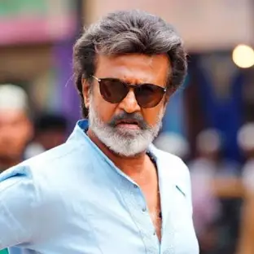

SUPER STAR RAJNIKANTH

From Bus Conductor to Super Star
About
- Shivaji Rao Gaekwad (born 12 December 1950), known professionally as Rajinikanth, is an Indian actor who works primarily in Tamil cinema.
- He was a bus conductor during which time he reportedly caught the fancy of the bus travelers with his mannerisms and style of issuing tickets and blowing the whistle and so on
- Rajinikanth began his career in 1975 initially playing the role of an antagonist in his early films, gradually rose to become a star actor,the growth of the star has been phenomenal
- He is one of the only actors who is seen offscreen without makeup
- His simplicity,style,humility,spirituality along with his good nature and deeds has gained him respect across the Globe
- Hailed as "Superstar" and "Thalaivaa" (leader) by fans and followers
- Age is just a number for the Thalaiva! He believes a strict diet and meditation are enough to keep him looking and feeling young
- Rajnikanth has acted in 160 films till now
- Rajinikanth is the first Indian to act in four formats of films, Black and White, Colour, 3D and Animation
- A star who is admired by all age groups
- Rajinikanth is the highest-grossing actor in Tamil cinema history and one of the highest-paid entertainers in India
- His Film release is festivity to fans across the world
- He does charity but never spoke about it!
- Rajini’s Style is an art,mastering the art of flipping the sunglasses like the man himself is one tough thing
- His signature gesture—in which he deftly flipped a cigarette high in the air and caught it between his lips—was adored by his intensely devoted fans.
Think good, speak good and do good, goodness alone follow will you-Rajnikanth
Into The Wild With Bear Grylls And Superstar Rajinikanth"
Know more about Thalaivaa